Week 10 & 13 - Output devices - Input Devices
You remember when you had to DESIGN A PCB for week 6? “design a pcb for an input or an output” now it is time to fabricate it ( finish the design - mill it - solder it)
Make the PCB you designed real and make it work ( you have from these week until INPUT WEEK- included)
I decided to team up with Angel on this task, given the we both found ourselves equally lost when it came to ideas for what to do with milling PCBs.
Angel and I had both worked on separate KiCad projects for the previous week, so we decided to stick to one project to simplify everything for us while we tried to figure everything out. We hoped that by working togehter, we could help each other throughout the whole process.
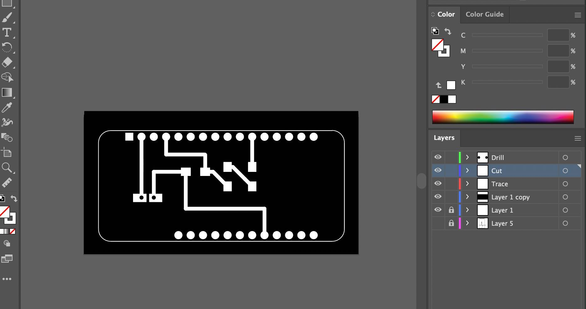
Angel had designed an attachment to the Arduino feather, which could allow her to connect a light sensor and an LED. We began by exporting the Kicad schematic into Illustrator and separated the layers into the steps we needed to take while milling: cutting the interior design, drilling through the holes and lastly cutting the edges. Each layer was exported into a separate PNG and later imported into MODS to create the gcode file.
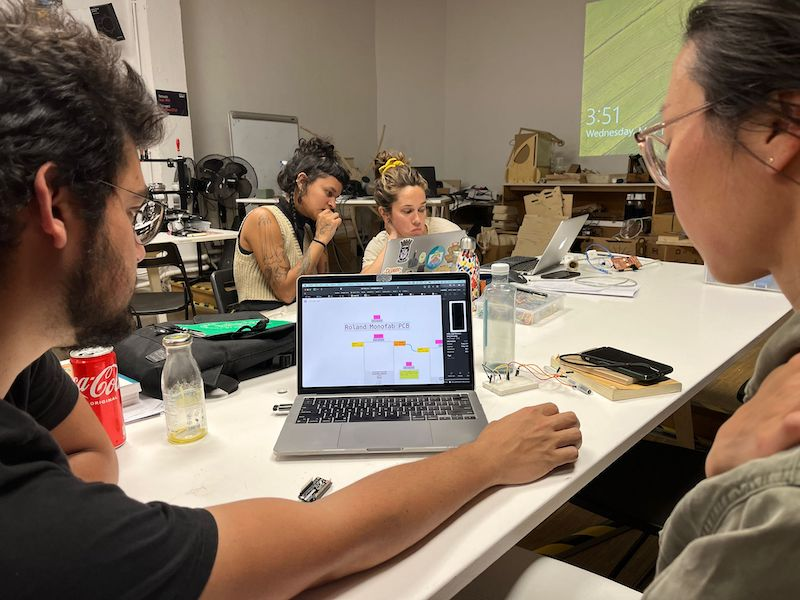
We encountered some problems with the website, mostly due to us not remembering how to use certain functions:
setting up the 0;0 origin: we did not realise it was set to a default of 10;10;10, which caused us to mill in the air as opposed to the PCB material.
full black and white layout: we realised some of the objects were not fully black, but rather a very dark grey, which made it undetectable by the software and thus did not cut those points.
rotating the file so that it was in the correct axis.
making sure to have 1000pp quality to get full precision.
--- screenshots of PNG files, software, and gcode files
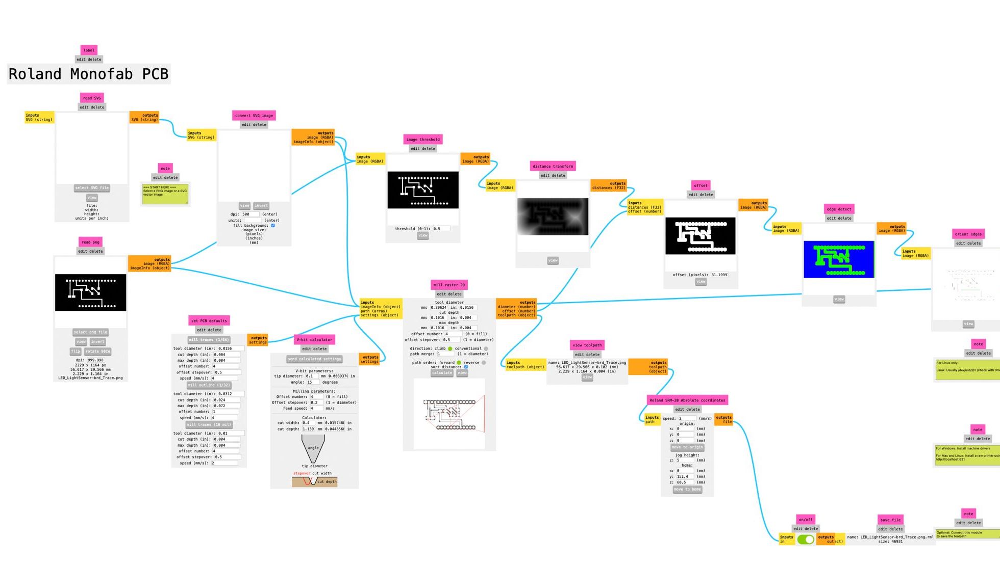
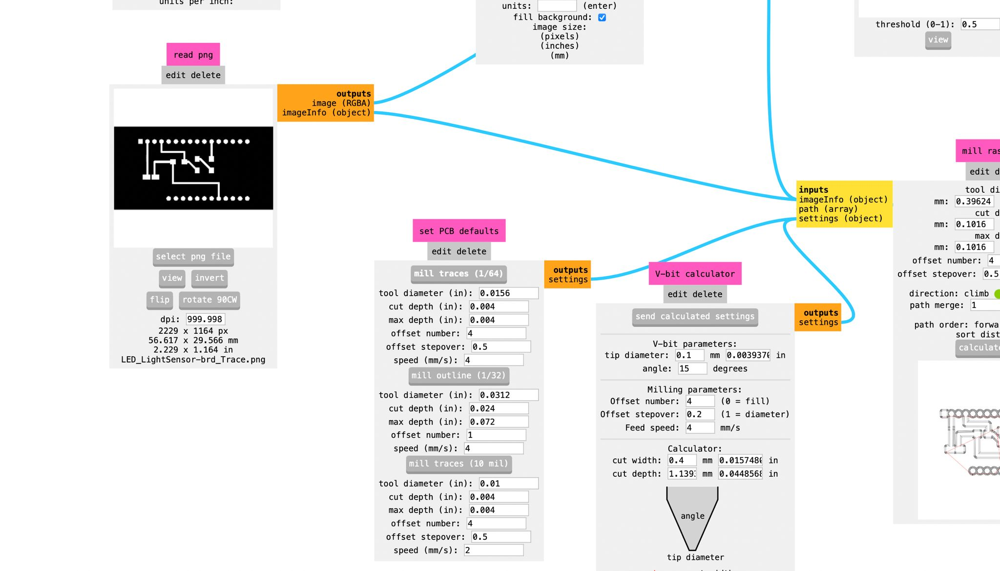
Milling the PCB
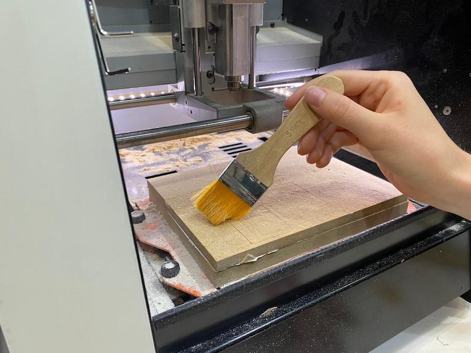
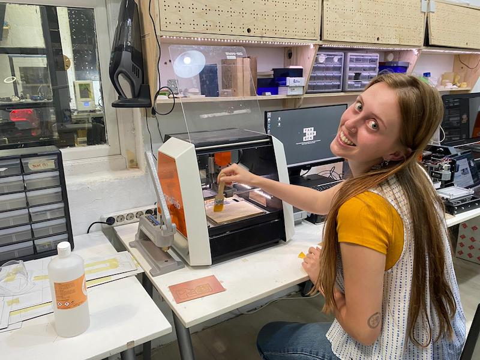
Cleaned up the wood (which needs to be sanded/changed because it was way too rough!!)
Taped the PCB with double sided tape (we did not put enough on the first try which made the PCB move a lot, but luckily it was only a test)
Use Vpanel for SRM-20 machine
Place the 1/64inch endmill for the internal Milling
Adjust x, y, z axis coordinates (unscrew end mill when close to the board, allowing it to fall perfectly, then tighten it again)
Press cut on the program and select the right file, making sure that the previous files were deleted (we accidentally cut somebody else's file at first)
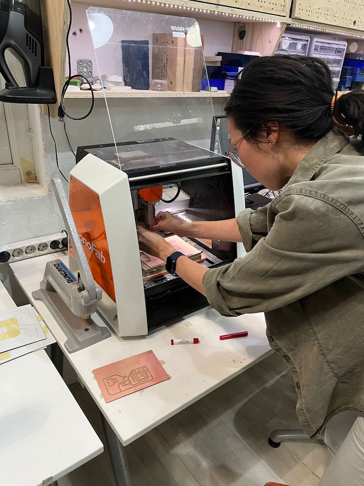
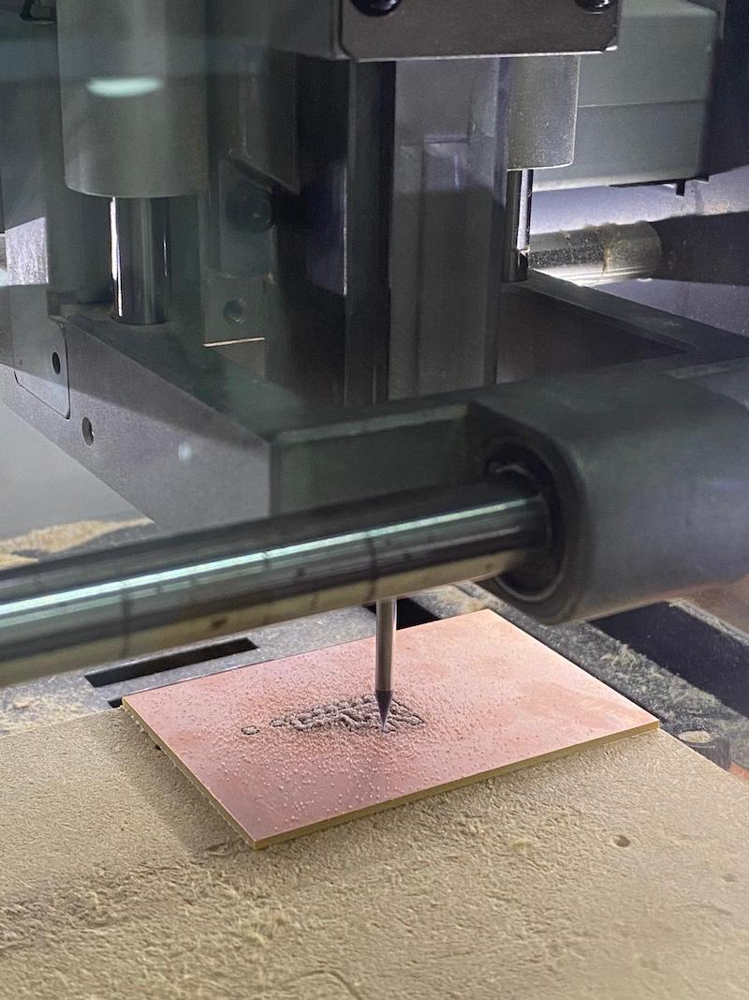
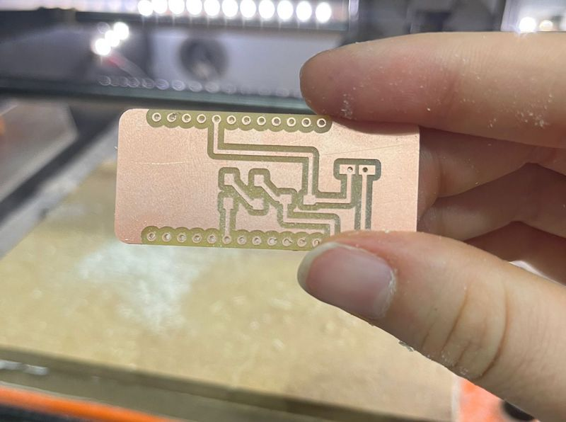
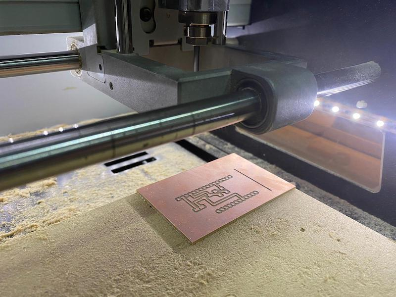
The final result.
Time to solder it!
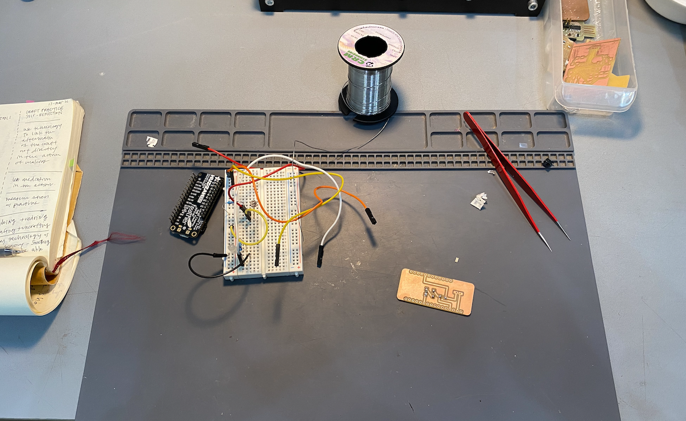
There's not much to say here because it's a straightforward process. Basically, we took the light sensor & LED and connected both to the PCB using the machine and soldering wire.
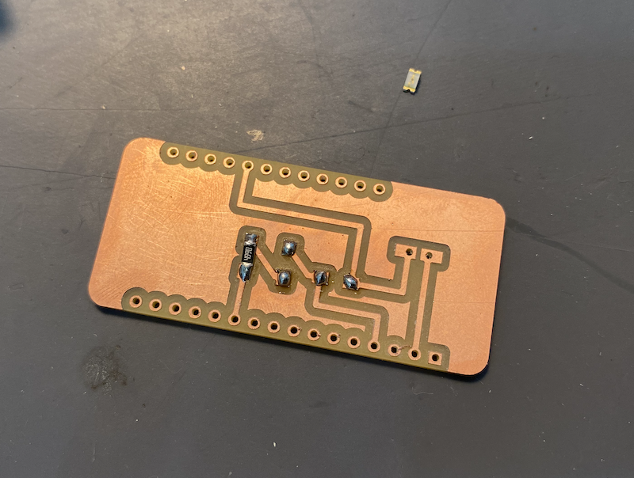
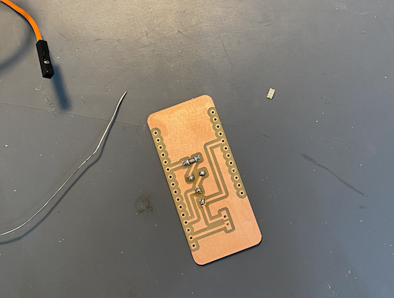
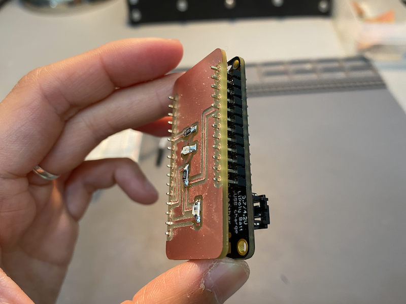
We later programmed the Arduino + PCB using the code from here.
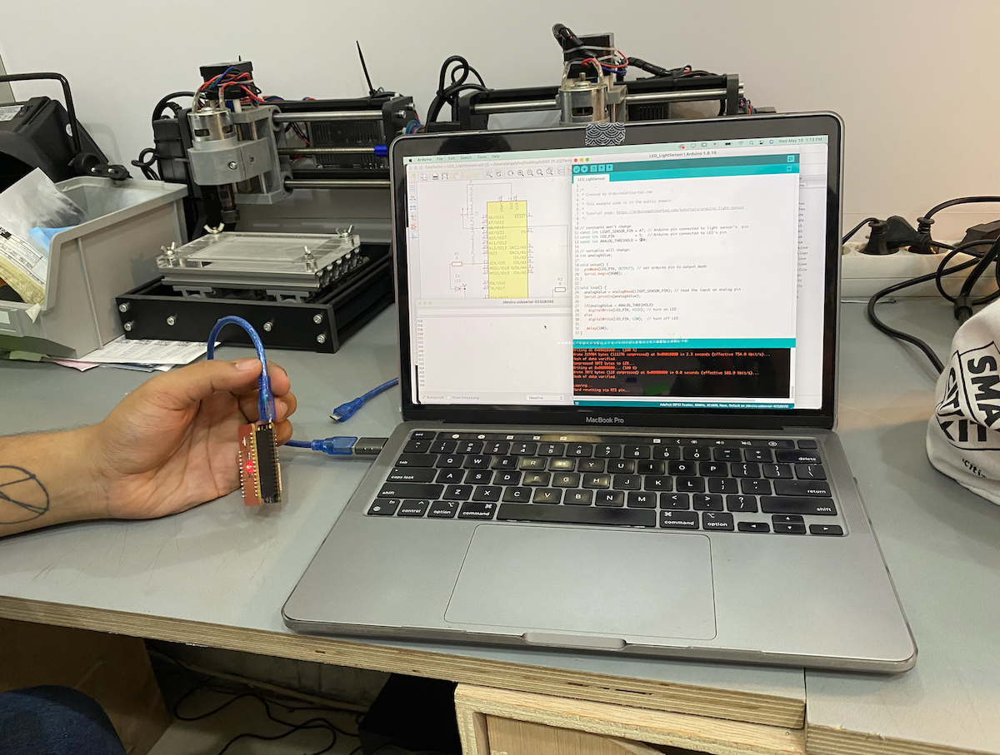
It's a simple Arduino + light sensor triggering LED code, which is exactly what we were looking for. Initially, we had some struggles trying to make it work, but we think it was because the cable was not receiving/sending data correctly. We asked Vikrant for help and he said the code was right, so it must've been the cables.
Angel and I experimented with switching the HIGH & LOW values, meaning we could decide if the LED would turn on or off based on the amount of light.
In this case:
if(analogValue < ANALOG_THRESHOLD)
digitalWrite(LED_PIN, HIGH);
else
digitalWrite(LED_PIN, LOW);
}
The LED would turn on if the light was off (meaning the ANALOG_THRESHOLD was inferior to 500)
In this case:
if(analogValue < ANALOG_THRESHOLD)
digitalWrite(LED_PIN, OFF);
else
digitalWrite(LED_PIN, HIGH);
}
The LED would turn on if the light was on (meaning the ANALOG_THRESHOLD was superior to 500)
I am considering making another version by making "PCB art". I wonder how it could look if I milled some sort of pattern on the PCB. The PCB might not be functional in that case, but it could be interesting to consider how to make it look unusual and be functional at the same time.